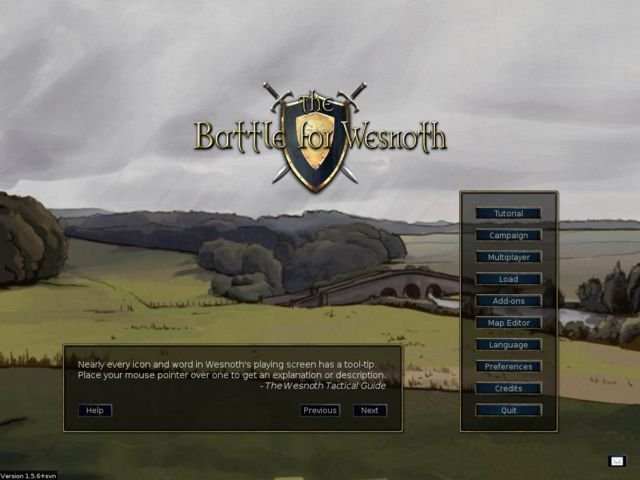

Indice
- Prefazione
- 1. Primi passi
- 2. Come si gioca
- 3. Strategia e suggerimenti
- 3.1. Strategia di base
- 3.1.1. Non sprecare unità
- 3.1.2. Tienti lontano dal raggio d'azione del nemico
- 3.1.3. Fatti scudo con la tua zona di controllo (ZDC)
- 3.1.4. Mantieni una linea di difesa
- 3.1.5. Fai ruotare le truppe
- 3.1.6. Sfrutta il terreno
- 3.1.7. Attaccare e scegliere gli obiettivi
- 3.1.8. Periodo del giorno
- 3.1.9. Esperienza
- 3.2. Divertirsi il più possibile col gioco
Lista delle tabelle
The Battle for Wesnoth è un gioco di strategia a turni di ambientazione fantasy.
Organizza un potente esercito, trasformando per gradi le reclute in esperti veterani. Nelle ultime partite, richiama i tuoi guerrieri più forti per forma un esercito imbattibile!Scegli le unità tra i diversi tipi di specialisti e seleziona un gruppo con i necessari punti di forza per combattere bene sui diversi terreni contro ogni avversario.
In Wesnoth ci sono moltissime saghe che aspettano solo di essere giocate. Puoi dare battaglia a orchi, non-morti e banditi nelle province del regno di Wesnoth; combattere al fianco dei draghi tra picchi scoscesi, degli elfi nelle verdi distese del bosco di Aethen, con i nani nei saloni di Knalga o persino con i tritoni nella Baia delle Perle. Puoi combattere per riconquistare il trono di Wesnoth o usare il terribile potere sui non-morti per dominare le terre dei mortali o guidare la tua gloriosa tribù di orchi alla vittoria contro gli uomini che osano saccheggiare la tua terra.
Potrai scegliere tra oltre duecento tipi di unità (fanteria, cavalleria, arcieri e maghi solo per cominciare) e per tipi di scontri che vanno dalle imboscate di poche unità agli scontri tra grossi eserciti. Puoi anche sfidare i tuoi amici – o sconosciuti – e combattere epiche battaglie fantasy multi-giocatore.
Battle for Wesnoth is open-source software, and a thriving community of volunteers cooperates to improve the game. You can create your own custom units, write your own scenarios, and even script full-blown campaigns. User-maintained content is available from an add-on server, and the very best of it is incorporated into Battle for Wesnoth’s official releases.
Indice
La parte conosciuta del Grande Continente, dove si trova Wesnoth, è divisa in tre regioni: le Terre del Nord, dove regna il caos; il regno di Wesnoth ed Elensefar (in certi periodi provincia di Wesnoth); infine il dominio degli elfi del Sudovest nel Bosco di Aethen e dintorni.
Il regno di Wesnoth si trova al centro di questo territorio. I suoi confini sono il Grande Fiume a nord, le Colline del Dulathus a est e sud, il margine del Bosco di Aethen a sudovest e l'oceano a ovest. Elensefar, un tempo provincia di Wesnoth, è delimitato dal Grande Fiume a nord, una vaga linea di demarcazione con Wesnoth a est, la Baia delle Perle a sud e l'Oceano a ovest.
Le Terre del Nord sono un territorio selvaggio a nord del Grande Fiume. Vari gruppi di orchi, nani, barbari e elfi popola la regione. I confini a nord e ad est sono delimitati dalla foresta di Lintanir, dove il grande regno degli elfi del Nord mantiene segreti i propri affari.
Ci sono dei villaggi sparsi per il territorio dove puoi curare le tue truppe e raccogliere dei tributi per sostenere il tuo esercito. Dovrai anche attraversare montagne e fiumi, spingerti nelle foreste, colline e tundra e attraversare le praterie. In ciascuna di questi terreni, creature diverse si sono adattate a vivere e possono spostarsi più velocemente e combattere meglio quando si trovano su un terreno familiare.
Nel mondo di Wesnoth vivono uomini, elfi, nani, orchi, draghi, sauri, tritoni, naga e molte altre razze ancora più misteriose e meravigliose. Nelle terre maledette marciano i non-morti, fantasmi e spiriti. Ciascuno si è adattato a un certo terreno. Gli uomini abitano principalmente le vaste praterie. In collina, montagna e nei sotterranei orchi e nani sono praticamente di casa. Le foreste sono il regno supremo degli elfi. Negli oceani e nei fiumi dominano tritoni e naga.
For game purposes, the races group into factions; for example, orcs often cooperate with trolls, and elves or dwarves with humans. Some other factions reflect divisions within human society — loyalists vs. outlaws, for example. In most campaigns, you will control units drawn a single faction. But sometimes factions make alliances with others, so you may face more than one faction in a scenario.
Quando Wesnoth viene lanciato per la prima volta, viene mostrata una pagina iniziale con una colonna di pulsanti chiamata menu principale. I pulsanti funzionano solo con il mouse. Per quelli che sono impazienti consigliamo: premete il pulsante «Lingua» per impostare la vostra lingua, poi premete il pulsante «Esercitazione» per cominciare con un esercizio e quindi giocate la campagna «Racconto di due fratelli» scegliendola dall'elenco proposto.

- Esercitazione
- The tutorial is a real, but basic, game which teaches you some of the basic controls needed to play the game. Winning or losing is not important here, but learning what to do is. Click the Tutorial button to play. In the Tutorial you are in the role of the prince Konrad or the princess Li’sar, learning from the Elder Mage Delfador - pay attention or he might turn you into a newt.
- Campagna
- Wesnoth è stato programmato principalmente per giocare le campagne, una serie di scenari interconnessi. Premi questo pulsante per cominciare una nuova campagna. Ti sarà presentato l'elenco delle campagne disponibili sul tuo computer (ne puoi scaricare altre se vuoi). Scegli la tua campagna e premi OK per cominciarla o Annulla per rinunciare. Ogni campagna ha un livello di difficoltà: facile, medio (normale) e difficile. Raccomandiamo il livello medio dato che è impegnativo ma non difficile. Non puoi cambiare la difficoltà durante la campagna. Nel caso che tu abbia seri problemi ad aprirti la strada attraverso le semplici difficoltà, la guida sulla Strategia di base ti sarà sicuramente d'aiuto. Scelto il livello di difficoltà, comincerai il primo scenario della campagna.
- Multigiocatore
- Premi questo pulsante per giocare un singolo scenario contro uno o più avversari. Puoi giocare su internet o sul tuo computer, contro il computer o avversari umani. Quando premi questo pulsante, compare una finestra che permette di scegliere come vuoi giocare lo scenario. Per saperne di più, vedi la sezione scenari.
- Carica
- Premi questo pulsante per caricare una partita salvata. Ti verrà mostrato una finestra con l'elenco delle partite salvate. Scegli la partita e premi OK per caricarla e continuare, o Annulla per tornare al menu principale. Se scegli una partita con replay, puoi spuntare la voce Replay. In questo caso la partita ripeterà tutte le mosse dall'inizio mentre tu guardi.
- Estensioni
- Premi questo pulsante per accedere al contenuto del server dove vengono ospitate molte cose prodotte da normali utenti. Tra le cose disponibili ci sono numerose campagne, ere multigiocatore (che definiscono le fazioni per partite multigiocatore) e mappe multigiocatore. Con il pulsante «Elimina estensioni» puoi eliminarle una volta che non le usi più.
- Editor delle mappe
- Fai clic su questo pulsante per avviare l'editor delle mappe da cui creare mappe personalizzate per partite multigiocatore o su cui costruire una tua campagna.
- Lingua
- Premi questo pulsante, scegli la tua lingua e premi OK per usarla o Annulla per continuare con la stessa lingua. La prima volta che viene lanciato Wesnoth, verrà usato l'inglese oppure se riesce a determinarla la tua lingua di sistema, ma una volta che tu la cambi partirà con quella lingua.
- Preferenze
- Premi qui per cambiare le impostazioni predefinite.
- Riconoscimenti
- Premi questo pulsante per scorrere l'elenco di chi ha contribuito sostanzialmente a Wesnoth. Spesso potrai contattarli direttamente su irc.freenode.org:6667 canale #wesnoth.
- Esci
- Premi questo pulsante per chiudere Wesnoth.
- Aiuto
- Premi questo pulsante per aprire il sistema di aiuto integrato. Ti fornirà la informazioni sulle unità e su tutti gli altri aspetti importanti di questo gioco. La maggior parte delle informazioni sono citate in questo manuale.
- Successivo
- Premi questo pulsante per leggere il prossimo suggerimento dal «Tomo di Wesnoth».
- Precedente
- Premi questo pulsante per leggere il precedente suggerimento dal «Tomo di Wesnoth».
- Busta
- Premi questo pulsante (l'icona di una busta) per aprire una finestra da cui potrai attivare o disattivare l'invio dei sommari che ci potranno aiutare a bilanciare ulteriormente le campagne. Tutti i dati inviati saranno anonimi.
Ci sono due modalità principali per giocare a Battle for Wesnoth:
- Giocare a una sequenza di scenari connessi, noti come una campagna, contro il computer.
- Giocare un singolo scenario contro il computer o avversari umani.
Campaigns are sequences of battles with a connecting storyline. Typical campaigns have about 10-20 scenarios. The main advantage with campaigns is that they allow you to develop your army. As you complete each scenario, the remaining units at the end are saved for you to use in the next scenario. If you choose not to use a unit at all during a scenario it is carried over to the next, so you don’t lose units you don’t use.
La campagna è il modo principale in cui dovrebbe si dovrebbe giocare Wesnoth, probabilmente è il più divertente e il metodo raccomandato ai nuovi giocatori per imparare il gioco.
Servono da 30 minuti a 2 ore per completare un singolo scenario. Questo è il metodo più veloce per giocare, ma le unità non saranno salvate e non potrai usare le unità delle campagne. Puoi giocare degli scenari contro il computer o contro altri giocatori sia attraverso internet o sul tuo computer. Si accede agli scenari attraverso il pulsante Multigiocatore del menu principale.
In general multiplayer games are played against other players via the Internet (you can also run them on your LAN if you have one). All these games are co-ordinated through the Wesnoth multiplayer server. Multiplayer games can take anywhere from 1 hour to 10 hours, depending on how many players there are (and the size of the map). The average time is between 3 to 7 hours. Games can be saved and loaded as many times as you like. So, it’s possible for some games to last 1 or 2 weeks, even though the play time is only a few hours. You cannot carry over units in multiplayer from one scenario to the next, so building up your army’s strength is possible only within the scenario.
Quando premi il pulsante «Multigiocatore» ci sono parecchie scelte a tua disposizione:

Questo sarà il tuo nome sul server multigiocatore. Se hai un account per il forum di Wesnoth, puoi usare gli stessi nome utente e password per l'accesso al server. Apparirà un riquadro per l'immissione della password se è necessario immettere una password per il nome utente attuale. Non si può usare un nome utente registrato senza password.
Questa scelta ti collega direttamente al server ufficiale. Entrerai nel mucchio dove puoi creare le partite che vuoi e dove parecchia partite sono già aperte e forse alcuni giocatori aspettano di unirsi a una nuova partita.
Questa scelta apre una finestra che permette di inserire l'indirizzo del computer a cui collegarsi. In questa finestra, c'è anche il pulsante «Elenco» che mostra l'elenco di server ufficiali che possono essere usati di riserva se il server principale non fosse raggiungibile.
Un elenco completo dei server ufficiali e dei giocatori è disponibile a questo sito web: Server multigiocatore.
Puoi anche raggiungere un server ospitato da qualsiasi altro giocatore con questa voce di menu. Quindi se hai un server in esecuzione nella rete locale, inserisci qui l'indirizzo e il numero di porta (normalmente: 15000). Se ad esempio vuoi connetterti con un server in esecuzione sulla macchina con l'indirizzo 192.168.0.10 e con la porta predefinita, scriverai nella finestra di dialogo: 192.168.0.10:15000
Per poter ospitare partite multigiocatori senza usare un server dedicato, devi avviare il server, che si chiama solitamente wesnothd. Questo programma è avviato automaticamente in sottofondo quando selezioni questa opzione. Sarà interrotto quando tutti i giocatori abbandonano il server. Gli altri giocatori dovranno collegarsi alla tua porta 15000 con il protocollo TCP per poter giocare con te sul tuo server. Se sei dietro un firewall, probabilmente dovrai cambiarne le impostazioni del per accettare i collegamenti in arrivo sulla porta 15000 e incanalare questo traffico sul computer che ospita la partita. Invece non dovrebbe essere necessario modificare le impostazioni del firewall per unirsi a partite ospitate su un server pubblico o da qualcun altro.
Questo pulsante crea una partita solo sul tuo computer. Puoi fare sia partita a singola postazione in cui ogni giocatore gioca dandosi il cambio al computer. La partite a singola postazione richiedono circa lo stesso tempo delle partite su internet. Oppure puoi giocare semplicemente uno scenario contro avversari artificiali anziché contro altri giocatori umani. Può essere un buon modo per diventare familiare con le varie mappe che vengono usate per le partite multigiocatore prima di affrontare avversari reali. Può anche essere un metodo semplice per esplorare le potenzialità delle unità delle diverse fazioni scegliendo con quale fazione giocare e quali fazioni affidare ai tuoi avversari. Naturalmente puoi anche fare entrambe le cose in una partita, cioè giocare una partita contro un amico e un avversario artificiale.

L'aspetto di base dello schermo di gioco è lo stesso sia che tu stia giocando uno scenario o una campagna. La maggior parte dello schermo è riempita dalla mappa che mostra tutta l'azione che ha luogo nella partita. Attorno alla mappa ci sono vari elementi che forniscono utili informazioni sul gioco e che verranno descritti in dettaglio nel seguito.

In cima allo schermo da sinistra a destra si trovano i seguenti elementi:
- Il pulsante Menu
- Il pulsante Azioni
- Il contatore dei turni (turno attuale/numero massimo di turni)
- Il tuo oro
- I villaggi (villaggi tuoi/villaggi totali)
- Il totale delle tue unità
- Il tuo mantenimento
- Le tue entrate
- L'ora attuale o il tempo rimanente (nelle partite multigiocatore a tempo)
- Posizione dell'esagono attuale (coordinata x, coordinata y)
- Difesa e movimento dell'unità attualmente selezionata sull'esagono indicato
- Tipo di esagono attuale

Sul lato destro dello schermo dall'alto al basso ci sono:
- Mappa completa, ridotta
- Indicatore dell'ora del giorno
- Profilo dell'unità per l'ultima unità selezionata
- Pulsante di fine turno
La prima volta che cominci uno scenario o una campagna, avrai solo poche unità sulla mappa. Una di queste sarà il comandante delle tue truppe (identificato dal simbolo di una piccola corona). Il tuo comandante di solito è sistemato in un castello su una casella speciale chiamata fortezza. Mentre il tuo comandante è su una fortezza (non necessariamente tua, ma anche la fortezza di un qualunque castello nemico catturato) e hai l'oro necessario, potrai reclutare le unità per il tuo esercito. Nei successivi scenari puoi richiamare le unità veterane che sono sopravvissute agli scenari precedenti. Da qui, puoi cominciare a costruire l'esercito per sconfiggere il nemico.
The first thing you will probably want to do is recruit your first
unit. Press Ctrl-R (or right click on an empty castle hex
and select "Recruit") and you will be able to recruit a unit from a list of
all the units available to you. Each recruit is placed on an empty castle
hex. Once you have filled the castle, you cannot recruit any more until
units move off. Your opponent’s commander is similarly placed on its
castle keep and will begin by recruiting its troops — so
don’t dilly-dally looking at the scenery, there’s a battle to be
won.
Al termine di ogni scenario vinto, tutte le truppe rimaste saranno salvate automaticamente. All'inizio del successivo scenario, puoi richiamarle in modo simile al reclutamento. Le truppe richiamate sono spesso più esperte delle reclute e di solito sono una scelta migliore.
Ogni tipo di partita impiega dai soldati, chiamati unità. Ogni unità viene identificate dalla razza, livello e classe. Ogni unità ha punti di forza e debolezze, in base alle sue resistenze, il terreno corrente e il livello. I dettagli completi si trovano nel sistema di aiuto del gioco.
As your troops gain battle experience, they will learn more skills and become stronger. They will also die in battle, so you’ll need to recruit and recall more when that happens. But choose wisely, for each has strengths and weaknesses a cunning opponent will quickly exploit.
Presta molta attenzione alla finestra degli obiettivi che si apre all'inizio di ogni scenario. Di solito potrai vincere eliminando tutti i comandanti nemici e sarai sconfitto se il tuo comandante muore. Ma gli scenari possono avere anche altri obiettivi di vittoria – spostare il tuo comandante in un certo punto, diciamo, o salvare qualcuno, o risolvere un enigma o resistere a un assedio per un certo numero di turni.
Quando vinci uno scenario, la mappa diventerà grigia e il pulsante Fine turno diventerà Fine scenario. Adesso puoi fare cose come cambiare le impostazioni di salvataggio oppure (se stai facendo una partita multigiocatore) chiacchierare con gli altri giocatori prima di premere quel pulsante per andare avanti.
Your army does not fight for free. It costs you gold to recruit units and gold to maintain them. You start each scenario with gold carried over from previous scenarios (although each scenario ensures you have at least a minimum amount of gold to start if you didn’t carry over enough from previous scenarios) and can gain more by meeting scenario objectives quickly and, during a scenario, by controlling villages. Each village you control will give you two gold pieces income per turn. When you first start a scenario it is usually worthwhile to gain control of as many villages as you can to ensure you have sufficient income to wage war. You can see your current gold and current income at the top of the screen as described in the section on the game screen.
All'inizio di ogni scenario, hai la possibilità di salvarlo. Se venissi sconfitto puoi ricaricarlo e riprovare. Una volta che hai vinto, ti sarà chiesto se salvare il prossimo scenario e giocarlo. Se durante uno scenario devi smettere di giocare, puoi salvarlo e caricarlo in seguito. Ricorda solo che un bravo giocatore di Battle for Wesnoth non ha mai bisogno di salvare durante uno scenario. Tuttavia la maggior parte dei principianti tendono a farlo abbastanza spesso.
Questi sono i tasti di controllo predefiniti. Puoi cambiarli secondo le tue preferenze usando il menù Preferenze.
Tabella 2.1. Controlli e tasti di accesso rapido
| F1 | Aiuto per The Battle for Wesnoth |
| Tasti freccia | Scorri |
| Clic col tasto sinistro | Seleziona unità, sposta unità |
| Clic col tasto destro | Menù principale, annulla azione |
| Clic col tasto centrale | Centra sulla posizione del puntatore |
| Esc | Esci dalla partita, dal menu o cancella il messaggio |
| Ctrl-r | Recluta unità |
| Ctrl-alt-r | Ripeti l'ultimo reclutamento |
| Alt-r | Richiama unità |
| u | Annulla l'ultima mossa (si possono annullare solo le mosse deterministiche) |
| r | Rifai mossa |
| m | Invia un messaggio a un altro giocatore (in multigiocatore) |
| Ctrl-m | Invia un messaggio ai tuoi alleati (in multigiocatore) |
| Alt-m | Invia un messaggio a tutti nel gioco (in multigiocatore) |
| Alt-c | Mostra il log della chat |
| n | Ruota tra le unità che possono ancora muovere |
| N | Ruota tra le unità che possono ancora muovere, in ordine inverso |
| Spazio | Termina il turno dell'unità e passa alla prossima unità che può ancora muovere |
| Shift-Spazio | Fa' mantenere la posizione alla unità attualmente selezionata (e termina le sue mosse) |
| Ctrl-Spazio | Termina il turno del giocatore |
| Ctrl-v | Mostra le mosse dell'avversario (dove l'avversario può spostarsi nel prossimo turno) |
| Ctrl-b | Mostra le potenziali mosse dell'avversario, se sulla mappa non ci fossero le tue unità. |
| Ctrl-j | Mostra gli obiettivi dello scenario |
| Ctrl-f | Passa alla modalità a pieno schermo/a finestra |
| Ctrl-a | Attiva/disattiva la modalità accelerata |
| Ctrl-g | Attiva/disattiva la griglia |
| Ctrl-c | Pulisci le etichette sullo schermo |
| Ctrl-s | Salva la partita |
| Ctrl-o | Carica gioco |
| Ctrl-p | Va al menu Preferenze |
| Ctrl-q | Esce dal gioco |
| / | Cerca (trova un'etichetta o un'unità per nome) |
| t | Continua la mossa interrotta di un'unità |
| + | Aumenta l'ingrandimento |
| - | Riduci ingrandimento |
| 0 | Ingrandimento normale |
| Ctrl-n | Rinomina unità |
| 1-7 | Mostra fin dove può arrivare l'unità selezionata in quanti turni. |
| l | Centra sull'unità comandante |
| d | Descrivi l'unità corrente |
| Ctrl-g | Attiva/disattiva la griglia |
| S | Aggiorna ora l'oscurità |
| D | Ritarda l'aggiornamento dell'oscurità |
| Alt-l | Assegna un'etichetta di testo a un esagono di terreno |
| Ctrl-l | Imposta l'etichetta della squadra |
| Alt-s | Mostra la tabella di stato |
| s | Mostra le statistiche |
| Alt-u | Elenco unità |
| Ctrl-alt-m | Attiva/disattiva i suoni della partita |
| : | Modalità comandi |
Ogni campo riceve un po' d'oro per cominciare e riceverà due pezzi d'oro al turno più altri due pezzi d'oro per ogni villaggio che controlla. In una campagna, l'oro di partenza viene aumentato con l'80% dell'oro con cui hai concluso lo scenario precedente e un minimo definito dallo scenario, che normalmente è più basso al crescere del livello di difficoltà.

L'oro viene principalmente impiegato per costruire il proprio esercito reclutando nuove unità o richiamando le unità dagli scenari precedenti di una campagna. Le unità possono essere reclutate solo quando il comandante si trova nella fortezza di un castello con almeno una casella di tipo castello libera.
- Clicca con il tasto destro su una casella del castello scegli recluta per reclutare nuove unità dall'elenco che viene presentato. Il costo del reclutamento dipende dall'unità, ma di solito, è tra 10 e 20 pezzi.
- Clicca con il tasto destro su una casello del castello scegli richiama per richiamare le unità dallo scenario precedente. Richiamare costa 20 pezzi d'oro per unità. Vedi richiamare unità per altre informazioni.
Each unit also has an upkeep cost. The upkeep cost is generally equal to the level of the unit, unless the unit has the "Loyal" trait (see below). Units that are not initially recruited - i.e. the leader or those that join voluntarily - usually have the Loyal trait. Upkeep is only paid if the total upkeep of a side’s units is greater than the number of villages that side controls. Upkeep paid is the difference between the number of villages and the upkeep cost.
Perciò, la formula per calcolare i tributi per turno è la seguente:
2 + villages - maximum(0, upkeep - villages)
dove il mantenimento è pari alla somma dei livelli di tutte le tue unità non fedeli.
Se il costo di mantenimento è maggiore del numero di villaggi + 2 allora il campo inizia a perdere oro; se è uguale non ci sono entrate.
Battle for Wesnoth ha centinaia di tipi di unità che sono caratterizzati da un ampio ventaglio di statistiche. Inoltre, le singole unità possono avere specifiche caratteristiche che le rende leggermente differenti da altre unità dello stesso tipo. Infine, i progettisti delle campagne possono aggiungere unità uniche alle loro campagne per espandere ulteriormente le scelte disponibili ai giocatori.
Le statistiche di base di un'unità sono i suoi punti ferita (PF), il numero di punti di spostamento e le armi che può usare e i danni che possono fare. Inoltre, le unità hanno altre caratteristiche, come l'allineamento e le abilità speciali, che sono descritte nel dettaglio nel seguito.
Ogni unità ha un allineamento: legale, neutrale o caotico. L'allineamento ha effetto su come le unità si comportano nei diversi periodi della giornata. Le unità neutrali non subiscono effetti. Le unità legali fanno più danni durante il giorni e di meno di notte. Le unità caotiche fanno più danno di notte e di meno di giorno.
Le due fasi «giorno» e «notte» vengono distinte in mattino, pomeriggio e prima guardia e seconda guardia dalle posizioni del sole e della luna nel grafico del periodo del giorno.
La tabella che segue mostra gli effetti dell'ora del giorno sui danni provocati dalle unità legali e caotiche:
Tabella 2.2. Ora del giorno e danno
| Turno | Immagine | Fase del giorno | Legale | Caotico |
|---|---|---|---|---|
| 1 |

| Alba | -- | -- |
| 2 |

| Giorno (mattino) | +25% | -25% |
| 3 |

| Giorno (pomeriggio) | +25% | -25% |
| 4 |

| Crepuscolo | -- | -- |
| 5 |

| Notte (prima guardia) | -25% | +25% |
| 6 |

| Notte (seconda guardia) | -25% | +25% |
| Speciale |

| Sottosuolo | -25% | +25% |
Ricorda che alcuni scenari sono ambientati sottoterra, dove è perennemente notte!
For example: consider a fight between a Lawful and a Chaotic unit when both
have a base damage of 12. At dawn and dusk, both will do 12 points of damage
if they hit. During Morning or Afternoon, the Lawful unit will do
(12 \* 1.25) or 15 points, while the Chaotic unit will do
(12 \* 0.75) or 9 points. During First or Second Watch,
the Lawful unit would do 9 points compared to the Chaotic unit’s 15.
Se combattesse un'unità neutrale equivalente, farebbe sempre 12 punti di danno indipendentemente dall'ora.
Le unità hanno caratteristiche che riflettono aspetti del loro carattere. La caratteristiche vengono assegnate a caso alle unità quando sono create. La maggior parte delle unità riceve due caratteristiche.
Le caratteristiche possibili per la maggior parte delle unità sono:
- Intelligente
- Le unità intelligenti richiede il 20% di esperienza in meno del normale per passare di livello (i troll non hanno questa caratteristica). Le unità intelligenti sono molto utili all'inizio di una campagna dato che possono raggiungere ai livelli superiori velocemente. Nel seguito della campagna non sono molto utili perché l'avanzamento dopo il massimo livello (ADML) non è un cambiamento significativo quanto il passaggio di livello. Se hai diverse unità al livello massimo, dovresti richiamare unità con caratteristiche più utili.
- Veloce
- Quick units have 1 extra movement point, but 5% less HP than usual. Quick is the most noticeable trait, particularly in slower moving units such as trolls or heavy infantry. Units with the Quick trait often have greatly increased mobility in rough terrain, which can be important to consider when deploying your forces. Also, Quick units aren’t quite as tough as units without this trait and are subsequently less good at holding contested positions.
- Resistente
- Le unità resistenti hanno 4 PF più 1 PF per livello in più del normale. Le unità resistenti possono essere utili in ogni fase di una campagna e questa è una caratteristica utile per qualsiasi unità. La resistenza spesso più utile ancora per un'unità con una combinazione di pochi punti ferita, buone difese o alte resistenze. Le unità resistenti sono utili specialmente per resistere contro gli avversari in posizioni strategiche.
- Forte
- Le unità forti fanno 1 danno supplementare per ogni colpo portato a segno negli scontri ravvicinati e hanno 1 PF supplementare. Anche se è utile per ogni unità da combattimento ravvicinato, la forza è più efficace per le unità che hanno un numero elevato di attacchi come l'elfo combattente. Le unità forti possono essere molto utili quando un po' di danno supplementare è tutto quello che serve per trasformare un colpo che ferisce nel colpo fatale.
Ci sono anche caratteristiche che sono assegnate solo per certe unità o solo alle unità di certe razze. Queste sono:
- Agile
- La unità agili fanno 1 danno supplementare per ogni colpo andato a segno nel combattimento a distanza. L'agilità è una caratteristica che solo gli elfi possiedono. Il popolo degli elfi è famoso per la sua straordinaria grazia e la loro grande abilità con l'arco. Alcuni, comunque, hanno un dono naturale che surclassa il talento dei loro cugini. Questi elfi infliggono un punto di danno supplementare con ogni freccia.
- Sano
- Noti per la loro vitalità, alcuni nani sono più vigorosi degli altri e possono riposarsi anche quando si spostano. Le unità in salute hanno 1 PF supplementare più 1 per livello più del normale e recuperano i 2 PF del turno di riposo ad ogni turno, anche senza riposo.
- Impavido
- Non soffre di un bonus negativo all'attacco durante il periodo del giorno sfavorevole (Fanteria pesante, necrofaghi, troll, morti viventi).
Ci sono anche delle caratteristiche che non vengono assegnate a caso. Queste caratteristiche vengono assegnate da chi ha costruito lo scenario oppure in base al tipo di unità:
- Leale
- Loyal units don’t incur upkeep. Most units incur an upkeep cost at the end of every turn, which is equal to their level. Loyal units do not incur this cost. During campaigns, certain units may opt to join the player’s forces of their own volition. These units are marked with the Loyal trait. Although they may require payment to be recalled, they never incur any upkeep costs. This can make them invaluable during a long campaign, when gold is in short supply. This trait is never given to recruited units, so it may be unwise to dismiss such units or to send them to a foolish death.
- Non-morta
- Undead units are immune to poison, also drain and plague doesn’t work on them. Undead units generally have Undead as their only trait. Since Undead units are the bodies of the dead, risen to fight again, poison has no effect upon them. This can make them invaluable in dealing with foes who use poison in conjunction with their attacks.
- Meccanica
- Le unità meccaniche non sono vive e dunque sono immuni al veleno, nemmeno l'assorbimento o il contagio funziona su di loro. Generalmente le unità meccaniche hanno solo la caratteristica meccanica.
Alcune unità hanno attacchi speciali. Sono elencati di seguito:
- Attacco alle spalle
- Durante la fase offensiva, questo attacco causa il doppio dei danni se l'unità si trova alle spalle del bersaglio e non è sotto l'effetto di abilità limitanti (esempio: trasformata in pietra).
- Furia
- Usato sia in attacco che in difesa consente di ingaggiare un combattimento sino alla morte di uno dei due combattenti o sino al termine del trentesimo attacco.
- Carica
- Quando usato nella fase offensiva, questo attacco procura il doppio del danno al bersaglio. L'unità subirà anche il doppio dei danni dal contrattacco del nemico.
- Assorbimento
- Questa unità assorbe energia vitale dalla unità vicine curando se stessa per la metà del danno procurato in attacco (arrotondato per difetto).
- Attacco improvviso
- Questa unità colpisce sempre per prima con questo attacco, anche se si sta difendendo.
- Magico
- Questo attacco ha sempre una probabilità del 70% di andare a segno, indipendentemente dalle capacità difensive dell'unità attaccata.
- Tiro di precisione
- Usato in attacco questo attacco ha almeno il 60% di probabilità di andare a segno.
- Contagio
- Quando un'unità viene uccisa da un contagio, viene sostituita da un morto che cammina della squadra dell'unità che l'ha uccisa. Questo non vale per i non-morti e per le unità nei villaggi.
- Veleno
- Questo attacco avvelena il bersaglio. Le unità avvelenate perdono 8 PF per ogni turno fino a che non vengono curate o ridotte a 1 PF. Il veleno non può, da solo, uccidere un'unità.
- Rallenta
- Questo attacco rallenta l'unità bersaglio fino alla fine del suo turno. Il rallentamento dimezza il danno causato dagli attacchi e il costo per il movimento delle unità rallentate è raddoppiato. Un'unità rallentata avrà l'icona di una lumaca nella barra laterale quando è selezionata.
- Pietrifica
- Questo attacco tramuta l'obiettivo in pietra. Le unità pietrificate non possono muoversi né attaccare.
- Sciame
- Il numero di colpi di questo attacco diminuisce quando l'unità è ferita. Il numero di colpi è proporzionale alla % di PF/PF Max che l'unità possiede. Per esempio un'unità con 3/4 dei suoi massimi punti ferita otterrebbe 3/4 del numero di colpi.
Alcune unità hanno abilità che hanno un effetto diretto su altre unità oppure un effetto su come le unità interagiscono con le altre unità. Queste abilità sono elencate di seguito:
- Imboscata
- Questa unità può nascondersi nelle foreste e non farsi individuare dai nemici. Le unità nemiche non possono vedere questa unità mentre si trova in una foresta a meno che non abbiano un'unità adiacente. L'unità nemica che scopre questa unità per prima perde immediatamente tutto il suo rimanente spostamento.
- Occultamento
- Questa unità può nascondersi nei villaggi (a eccezione dei villaggi acquatici) e non farsi individuare dai nemici tranne quelli che le stanno a fianco. Le unità nemiche non possono vedere questa unità mentre si trova in un villaggio a meno che non abbiano un'unità adiacente. L'unità nemica che scopre questa unità per prima perde immediatamente tutto il suo rimanente spostamento.
- Cura
- L'abilità cura permette di curare un'unità avvelenata, ma questa unità non riceve cure addizionali nel turno in cui viene curata dal veleno.
- Guarisce +4
- Permette all'unità di guarire, all'inizio del turno, le truppe amiche vicine. L'unità di cui si è occupata il guaritore può recuperare fino a 4 PF per turno oppure arrestare gli effetti del veleno per quel turno. Un'unità avvelenata non può essere curata dal veleno da un guaritore e dovrà cercare l'assistenza di un villaggio o di un'unità che abbia l'abilità "cura".
- Guarisce +8
- Questa unità combina i rimedi delle erbe con la magia per guarire le unità più rapidamente di quanto è normalmente possibile sul campo di battaglia. Un'unità guarita in questo modo da questo guaritore può recuperare fino a 8 PF per turno, o interrompere l'effetto del veleno per questo turno. Una unità avvelenata non può guarire dal veleno tramite un guaritore e deve cercare le cure di un villaggio o di un'unità che cura.
- Illumina
- Questa unità illumina l'area adiacente permettendo alle unità legali di combattere meglio e penalizzando quelle caotiche. Ciascuna unità adiacente a essa combatterà come se fosse il tramonto quando è notte e come se fosse giorno quando si è al tramonto.
- Comando
- Questa unità può guidare le unità amiche che lo circondano facendole combattere meglio. Le unità alleate di livello inferiore adiacenti a questa unità infliggeranno più danni in battaglia. Quando un'unità di un alleato adiacente e di un livello più basso combatte, i suoi attacchi causano un danno del 25% maggiore rispetto al proprio livello.
- Agguato notturno
- Questa unità di notte diventa invisibile. Le unità nemiche non possono vedere questa unità di notte a meno che non abbiano un'unità adiacente. L'unità nemica che scopre questa unità per prima perde immediatamente tutto il suo rimanente spostamento.
- Rigenerazione
- L'unità guarisce da sola di 8PF per turno. Se è avvelenata, sarà curata dal veleno invece di guarire.
- Incursore
- Questa unità è addestrata a muoversi rapidamente oltre i nemici e ignora tutte le zone di controllo nemiche.
- Risoluta
- Le resistenze di quest'unità sono raddoppiate, fino a un massimo del 50% durante la difesa. Le vulnerabilità restano invariate.
- Sommersione
- Questa unità può nascondersi nelle acque profonde e non farsi individuare dai nemici. Le unità nemiche non possono vedere questa unità mentre si trova in acque profonde a meno che non abbiano un'unità adiacente. L'unità nemica che scopre questa unità per prima perde immediatamente tutto il suo rimanente spostamento.
- Teletrasporto
- Questa unità può teletrasportarsi fra due villaggi alleati usando una delle sue mosse.
Le unità fanno esperienza dal combattimento. Dopo aver ottenuto esperienza sufficiente, avanzano di un livello e diventano più potenti. L'esperienza guadagnata dipende dal livello dell'unità avversaria e dall'esito dello scontro: se un'unità uccide il suo avversario, riceve 8 punti esperienza per ogni livello del nemico (4 se il nemico è di livello 0), mentre le unità che sopravvivono a una battaglia senza uccidere i loro avversari sono ricompensate con 1 PE per ogni livello del nemico. In altri termini:
Tabella 2.3. Bonus di esperienza per l'uccisione o il combattimento di nemici di diversi livelli
| livello del nemico | bonus di uccisione | bonus di combattimento |
|---|---|---|
| 0 | 4 | 0 |
| 1 | 8 | 1 |
| 2 | 16 | 2 |
| 3 | 24 | 3 |
| 4 | 32 | 4 |
| 5 | 40 | 5 |
| 6 | 48 | 6 |
Dopo che hai completato uno scenario, tutte le unità sopravvissute saranno disponibili per essere richiamate nel prossimo scenario. Non potrai attaccare né muovere con un'unità appena reclutata o richiamata. Un'unità richiamata mantiene il livello precedente, i punti esperienza e (qualche volta) gli oggetti magici acquisiti e arriverà con tutti i suoi punti ferita-
Clicking on a unit identifies all the places it can move on its current turn
by dimming unreachable hexes (pressing the number keys 2-7 will identify the
additional hexes that can be reached in that number of turns in a similar
manner). While in this mode, moving the cursor over a hex will identify the
path your unit will take towards that hex as well as additional information
on the defensive bonus of your unit on that hex and, if it will take more
than one turn, the number of turns it will take your unit to arrive. If you
do not wish to move the unit this mode can be cancelled by selecting a
different unit (by clicking on the new unit or using the
n or N keys) or by right-clicking
(Command-click on a Mac) anywhere on the map. The orbs on the top of a unit’s energy bar provide a
quick way to see which of your units have already moved or can move further
in the current turn.
If you decide to move the selected unit, click on the hex you want to move to and your unit will move towards that space. If you select a destination which is beyond reach in the current turn, the unit will move as far as it can in the current turn and enter goto-mode. In goto-mode your unit will continue moving towards its destination in subsequent turns. You can easily undo goto movements at the beginning of your next turn. You may also change a unit’s destination by selecting that unit and choosing a new destination or clicking the unit again to cancel the goto.
Se ti sposti su un villaggio che è neutrale o posseduto da un avversario, ne prenderai il controllo e concludi lo spostamento per quella unità.
La maggior parte delle unità esercitano una zona di controllo che ha un effetto sulle caselle che la tua unità può raggiungere e il suo percorso. Queste limitazioni si riflettono automaticamente sul percorso che viene mostrato per la tua unità e le caselle dove si può muovere nel turno corrente.
A unit’s Zone of Control extends to the six hexes immediately adjacent to the unit, and units that move into an enemy zone of control are forced to stop. Units with the skirmisher ability ignore enemy zones of control and are able to move through them freely without being forced to stop. Level 0 units are considered too feeble to generate a zone of control and all units are able to move through the hexes around an enemy level 0 unit freely.
In cima alla barra dell'energia di fianco alle unità c'è una sfera. Può essere:
Tabella 2.4. Sfere
| Sfera | Immagine | Descrizione |
|---|---|---|
| Verde |

| Se controlli l'unità e non si è mossa per questo turno |
| Gialla |

| Se controlli l'unità e si è mossa per questo turno, ma può muoversi ancora o attaccare |
| Rossa |

| Se controlli l'unità ma ha usato tutte le sue mosse |
| Blu |

| Se l'unità è un alleato che non controlli. |
| - |

| Le unità nemiche non hanno la sfera sopra la barra dell'energia |
Sotto ogni unità ci sarà normalmente un dischetto colorato o base. Il colore identifica la sua squadra; in una campagna, il colore del giocatore umano è il rosso. Il colore della squadra viene anche evidenziato in alcune parti degli abiti dell'unità o eventualmente sulle insegne di uno scudo.
Di solito il dischetto sarà un cerchio pieno, che apparirà come un ellisse a causa dell'angolo di visione. Qualche volta (di solito sulle unità di livello 0), vedrai un dischetto che sembra come le pale di un elicottero; ciò indica che l'unità non ha zona di controllo.
Alcune campagne usano una base a forma di stella per indicare il comandante e gli eroi (le unità che sono in qualche modo speciali e ad esempio non è permesso che muoiano durante il corso di uno scenario); altre usano l'icona di una corona d'argento sopra la barra dell'energia per indicare gli eroi. Altre ancora non hanno alcun indicatore specifico per l'eroe. Quale usare (se usarlo) è lasciato alle scelte stilistiche dell'architetto della campagna.
Se ti muovi vicino a un'unità avversaria puoi attaccarla. Clicca sulla tua unità che è adiacente a un'unità nemica e clicca sull'avversario che vuoi attaccare – in questo modo apparirà una finestra che mostra ulteriori scelte per il combattimento. Ogni unità ha una o più armi con cui può attaccare. Alcune armi, come le spade, sono armi per scontri ravvicinati e alcune armi, come gli archi, sono armi a distanza.
Se attacchi con un'arma per scontri ravvicinati, l'avversario potrà contrattaccarti con la sua arma da scontri ravvicinati. Se attacchi con un'arma a distanza, il nemico potrà replicare con la sua arma a distanza. Se un nemico non ha un'arma dello stesso tipo di quella con cui è attaccato, non potrà replicare e non ti farà alcun danno in quel combattimento.
I diversi tipi di attacco producono diversi tipi di danni e ogni arma può portare un certo numero di colpi. Per esempio, un elfo combattente fa 5 punti di danno con la sua spada ogni volta che colpisce e può portare 4 colpi con la spada in uno scambio. Questo viene scritto come 5-4, che vuol dire 5 danni per colpo e 4 colpi.
Every unit has a chance of being hit based on the terrain it is in. For instance, units in castles and villages have a lower chance of being hit, and Elves in forest have a low chance of being hit. To see a unit’s defense rating (i.e. chance not to be hit) in terrain, click on the unit, and then mouse over the terrain you’re interested in, and the defense rating will be displayed as a percentage value in the status pane, as well as shown over the terrain hex.
Puoi avere altre informazioni, compresa la probabilità che l'attaccante e il difensore vengano uccisi, cliccando sul pulsante «Calcolo dei danni» nella finestra di combattimento.
- Lama: le armi con un filo tagliente, usate per tagliare brandelli di carne da un avversario. Esempi: pugnale, scimitarre, sciabola, artigli di drago.
- Perfora: le armi appuntite sia con un lungo manico, sia i proiettili, impiagate per perforare il corpo dell'avversario e danneggiare gli organi interni. Esempi: lance delle fanteria o dei cavalieri, frecce.
- Impatto: le armi che non hanno né un filo tagliente né una punta, ma abbastanza pesanti da rompere le ossa di un avversario. Esempi: mazze, bastoni, pugno di un troll.
- Freddo: le armi basate sul freddo o su proiettili ghiacciati. Esempio: l'onda fredda di un adepto dell'oscurità.
- Fuoco: le armi usano il fuoco per arrostire i nemici come polli. Esempio: l'alito infuocato dei draghi.
- Esoterico: Un attacco che disperde la magia che anima zombi, spettri e altre creature non-morte. Esempio: l'attacco magico di un mago bianco.
Ogni unità è più o meno vulnerabile ai diversi tipi di attacchi. 6 cifre nella descrizione di un'unità indicano le forze e le debolezze dell'unità contro i 6 tipi di attacco. Una cifra della resistenza positiva indica che l'unità soffrirà meno danni da questo tipo di attacco. Una resistenza negativa indica che l'unità è particolarmente vulnerabile a questo tipo di attacco.
Esempio: le scagli dei draghi li proteggono dalla maggior parte degli attacchi tranne che le armi che perforano o il freddo. Le unità della cavallerie degli uomini sono generalmente ben protette tranne che dalla perforazione che è il loro punto debole. I non-morti sono molto resistenti alle lame e alla perforazione, ma sono molto vulnerabili agli attacco a impatto o a quelli esoterici.
Se usi il miglior tipo di attacco contro le unità avversarie, aumenterai considerevolmente le tue probabilità di ucciderli.
Un'unità può essere guarita fino a un massimo di 8 punti ferita per turno. Un'unità che non si muove né combatte si sta riposando e recupera 2 punti ferita. I punti ferita recuperati con il riposo si aggiungono ai punti ferita recuperati con le cure perciò è possibile che un'unità recuperi fino a un massimo di 10 punti ferita per turno.
Ci sono due modi principali in cui un'unità può essere curata:
- Il riposo in un villaggio. L'unità recupererà 8 punti ferita per turno.
- Stare a fianco di unità con l'abilità guarisce. Il numero di punti guariti è specificato nella descrizione dell'abilità dell'unità che può essere guarisce +4 o guarisce +8.
I troll e i wose hanno l'abilità di curarsi da soli attraverso la rigenerazione. Se sono feriti recupereranno 8 punti a ogni turno. Nota che siccome qualsiasi unità può guarire di al massimo 8 punti per turno, o troll e i wose non guadagneranno ulteriori benefici dallo stare in un villaggio o vicino a un'unità che guarisce.
Some attacks can inflict poison damage on your unit. When this happens the poisoned unit will take 8 damage each turn until it is cured. Poison can be cured by waiting on a village or being next to a unit with the cures ability. Units with the heals ability can only prevent the poison from causing damage that turn, not cure it. When poison is cured the unit does not gain or lose hitpoints on that turn due to healing/poisoning. A unit can not be healed normally until it is cured of poisoning. Resting is still allowed, although it will not substantially diminish the poison’s effect.
Altri suggerimenti sulla guarigione:
- Un'unità può richiedere diversi turni per guarire completamente.
- I guaritori (elfa sciamana, driade, fata, mago bianco, mago di luce, paladino) guariscono tutte le unità ferita attorno a loro, perciò puoi tenere le unità vicine alla battaglia senza perderle.
- I guaritori non curano le unità nemiche.
- I guaritori non possono curare se stessi, ma vedi il prossimo punto.
- Usa i guaritori in coppie, in modo che possano curarsi fra di loro se necessario.
- Più guaritori di fazioni alleate diverse possono guarire la stessa unità e accelerarne la guarigione.
- I troll e i wose non possono rigenerare le altre unità.
- I troll e i wose si curano da soli dal veleno come fa un villaggio.
Indice
- 3.1. Strategia di base
- 3.1.1. Non sprecare unità
- 3.1.2. Tienti lontano dal raggio d'azione del nemico
- 3.1.3. Fatti scudo con la tua zona di controllo (ZDC)
- 3.1.4. Mantieni una linea di difesa
- 3.1.5. Fai ruotare le truppe
- 3.1.6. Sfrutta il terreno
- 3.1.7. Attaccare e scegliere gli obiettivi
- 3.1.8. Periodo del giorno
- 3.1.9. Esperienza
- 3.2. Divertirsi il più possibile col gioco
I principi di base di combattimento ed i suggerimenti che seguono hanno lo scopo di aiutarti a cominciare la carriera di veterano di battaglia di Wesnoth. Gli esempi concreti fanno qualche volta riferimento alla campagna «L'erede del trono».
Non mandare le unità ferite a morte certa. Una volta che un'unità ha perso più della metà dei suoi punti ferita (PF), dovresti prendere in seria considerazione l'ipotesi di ritirarla in un luogo sicuro e anche sistemarla in un villaggio per guarire o affidarla alle cure di un guaritore (come le elfe sciamane o i maghi bianchi). I guaritori sono utilissimi!
This is for practical reasons: a heavily wounded unit cannot hold back or kill the enemy. During attack and counterattack, it most often will perish. Further, by sending it to its sure death, its gathered experience points (XP) are lost. Recruiting a replacement may be impossible because the leader is not in its keep or because funds are running low. Even if you can recruit a replacement, it is most often far away from the battle front. So don’t waste your units.
Come proteggere le unità ferite? Sono più protette tenendole al di fuori dalla portata dell'avversario. Nessun nemico potrà attaccarle se non possono avvicinarglisi. Il prossimo paragrafo sulle zone di controllo (ZDC) farà vedere come limitare le mosse del nemico.
Nel menu Azione, puoi scegliere «Mostra le mosse nemiche» per evidenziare le caselle che l'avversario può attualmente raggiungere. Si tiene conto delle zone di controllo. Così, puoi controllare che la tua unità moribonda, che si trova dietro, non possa davvero essere attaccata dato che il nemico non può raggiungerla.
Quando gli eserciti si scontrano, vorrai essere il primo ad attaccare. Perciò cerca di concludere lo spostamento al di là della portata di attacco dell'esercito nemico. Non potrà attaccarti ma probabilmente si avvicinerà alla tua portata.
Ogni unità di livello 1 o superiore mantiene una zona di controllo (ZDC) che copre tutte e 6 le caselle adiacenti. Ciò vuol dire che una volta che il nemico si trova in una delle sei caselle adiacenti, è costretto a fermarsi e la sua fase di movimento termina (solo i nemici con la rara abilità di incursori possono ignorarle).
A causa della ZDC, un nemico non può infiltrarsi tra due unità che sono allineate da nord a sud o lungo una diagonale e che hanno esattamente 1 o 2 caselle tra di loro. Combinando queste coppie in un lungo muro o impiegandole in diverse direzioni, puoi impedire che il nemico raggiunga una unità ferita nelle retrovie. Prima deve sconfiggere le unità che impongono le ZDC. Se il nemico riesce a raggiungerla a malapena, anche una sola unità può proteggere una piccola area dietro di sé.
Allineando parecchie unità fianco a fianco o con al massimo una casella di spazio tra di loro, puoi costruire una potente linea difensiva. Nota che, dato che Wesnoth usa caselle esagonali, una «linea» est-ovest non è una linea retta ma una curva a zig-zag. La linea nord-sud e le diagonali sono «vere» linee.
Se il nemico arriva da un lato, può attaccare una singola unità della linea solo con due delle sue unità alla volta. Come regola di massima, un'unità sana senza particolari debolezze può resistere a un attacco di due normali unità nemiche dello stesso livello o inferiore senza venir uccisa.
Sfortunatamente la tua linea spesso si piega per formare un cuneo o adattarsi al terreno. In questi angoli, tre unità nemiche possono attaccare. Capita anche alle estremità di una linea, se la linea è troppo corta. Usa le unità con molti punti ferita sul terreno adatto o con le opportune resistenze per tenere questi punti deboli. È più probabile che vengano uccise perciò impiega unità senza o con poca esperienza (XP) per questo scopo.
Se allinei le truppe puoi anche impedire che il nemico ne circondi qualcuna. A causa della ZDC, un'unità con un avversario dietro e uno davanti è intrappolata.
Quando un'unità sulla linea del fronte è gravemente danneggiata puoi spostarla al sicuro dietro la linea difensiva. Per tenere la linea, probabilmente dovrai sostituirla con una riserva, perciò tieni un paio di unità dietro la linea del fronte. Se hai dei guaritori, le unità ferite in seconda linea recupereranno in fretta.
Nota che le tue unità possono attraversare le caselle che contengono le tue stesse truppe.
Cerca di disporre le truppe in modo che attacchino da una casella con alta difesa un avversario in una casella con un terreno basso. In questo modo, è meno probabile che la risposta del nemico faccia danno.
Per esempio, puoi disporre i tuoi elfi appena dentro il limite di una foresta in modo che possano attaccare gli orchi che stanno nella prateria mentre i tuoi elfi approfitteranno delle difese della foresta.
Naturalmente la parte più importante della tua vittoria è attaccare e avanzare. Uccidi o indebolisci gli avversari sulla tua strada e sposta avanti la tua linea difensiva. Potrebbe diventare rischioso se l'avversario contrattacca nello stesso turno.
Spesso manderai parecchie unità su una singola unità nemica per finirla, ma queste formavano la tua linea difensiva che ora è parzialmente interrotta. Forse non importa perché sei fuori dalla portata del nemico più vicino. Forse sì, perché hai solo indebolito un avversario molto forte che al prossimo turno contrattaccherà. Forse un cavallerizzo potrebbe portare il colpo fatale.
Colpire per primo è un vantaggio perché ti permette d scegliere quale unità affrontare. Sfrutta le debolezze del nemico: per esempio, dirigi gli attacchi a distanza contro i nemici senza attacchi a distanza. Sfrutta le debolezze come la vulnerabilità dei cavallerizzi alla perforazione. Ma ricorda che al loro turno contrattaccheranno, perciò potresti avere punti deboli che il nemico sfrutterà.
Per esempio, i cavallerizzi possono efficacemente formare una linea di difesa contro le reclute degli orchi e i cuccioli di troll perché hanno una certa resistenza contro le lame e gli impatti. Ma i cavallerizzi possono cadere velocemente contro gli orchi arcieri e i goblin armigeri.
Di solito è conveniente se riesci a uccidere (o quasi) l'unità di fronte. Se non sei sicuro di sconfiggere il nemico in un turno, assicurati che la tua unità possa resistere al contrattacco o accetta la possibilità di perdere l'unità. Per resistere ai colpi del nemico del turno successivo, è spesso saggio attaccare alla distanza che permette al nemico di farti meno danni, piuttosto che infliggere il danno massimo al nemico.
In particolare, impiega le armi a distanza se il nemico non ne ha. La scelta proposta dal computer controlla solo i danni più alti che puoi infliggere, perciò se la usi le tue unità spesso subiranno più danni del necessario.
Ricorda che le unità legali come gli uomini combattono meglio di giorno e le unità caotiche come gli orchi o i non-morti combattono meglio di notte. In teoria, dovresti preferire incontrare il nemico quando sei forte mentre lui è debole. Quando il nemico è nel suo momento forte, spesso conviene rafforzare le tue linee e tenere una posizione difensiva favorevole. Quando il suo momento debole sta per arrivare, la tua avanzata colpirà duro.
Per esempio, gli elfi potrebbero tenere una foresta durante un furioso attacco notturno degli orchi e avanzare all'alba. Potrai persino accorgerti che i giocatori artificiali ritirano i propri orchi durante il giorno.
Nel corso di una campagna, è fondamentale costruire una forza esperta. Gli scenari successivi presuppongono che tu abbia unità di livello 2 o 3 da richiamare.
Le tue unità guadagnano più esperienza (XP) uccidendo un'unità nemica (8XP per ogni livello dell'unità uccisa). Perciò, è importante che le tue unità di livello più alto indeboliscano il nemico, ma lascino l'uccisione a una unità che ha più bisogno di XP. I guaritori in particolare sono spesso deboli in combattimento e spesso hanno bisogno di rubare le uccisioni in questo modo per passare di livello.
All'inizio (quando normalmente non hai unità di alto livello), cerca di dare la maggior parte delle uccisioni a poche unità. Ciò accelererà il loro passaggio al secondo livello e poi potranno guidare gli altri.
Non trascurare di far fare esperienza al tuo comandante. Devi tenerlo al sicuro, ma se lo tieni troppo nella bambagia sarà comunque di livello troppo basso per sopravvivere ai futuri scenari.
Ricordati che l'idea di un gioco è di divertirsi! Ecco qualche raccomandazione per ottenere il massimo del divertimento da parte della squadra di sviluppo:
- Pensa di giocare le campagne al livello di difficoltà «medio», specialmente se hai altre esperienze con giochi strategici. Pensiamo che lo troverai molto più gratificante.
- Non te la prendere troppo quando perdi qualche unità. La campagna è stata progettata per permettere la perdita di qualche unità durante il tragitto.
- Don’t abuse saved games. Long ago, Wesnoth only allowed saving the game at the end of a scenario. Mid-scenario saving was added as a convenience to use if you had to continue the game another day, or to protect against crashes. We do not recommend loading mid-scenario saved games over and over because your White Mage keeps getting killed. Learn to protect your White Mage instead, and balance risks! That is part of the strategy.
- Se devi caricare una partita salvata, consigliamo di tornare all'inizio dello scenario, in modo che tu possa scegliere una nuova strategia che funzioni, piuttosto che cercare semplicemente un numero casuale che ti favorisca.
- Ma ricorda, lo scopo è divertirsi! Potresti avere dei gusti diversi da quelli degli sviluppatori, perciò fa' quello che trovi più divertente! Se ti diverti a caricare una partita ogni volta che fai un errore, a cercare la partita perfetta in cui non perdi nessuna unità, a tutti i costi, va' avanti così!
- Per prima cosa, leggi gli obiettivi dello scenario. A volte non dovrai uccidere i comandanti nemici; invece sarà sufficiente resistere per un certo numero di turni o raccogliere un certo oggetto.
- Guarda la mappa: il terreno, la posizione del tuo comandante e di quelli degli altri.
- Then, begin to recruit units. Cheap units are useful to soak up the first wave of an enemy’s attack; advanced units can then be brought in as support. Fast units can be used as scouts, for exploring the map and to quickly conquer villages.
- Cerca di catturare e mantenere il controllo di tutti i villaggi possibili per avere l'oro che ti danno.
- Tieni assieme le unità in modo che il nemico non possa attaccarle da tutti i lati e in modo che tu possa sovrastare in numero ogni unità nemica. Allinea le tue unità in modo che il nemico non possa attaccare le tue unità da più di due lati.
- Le diverse unità hanno diversi punti di forza e di debolezza a seconda del terreno e di chi stanno attaccando; clicca con il tasto destro e scegli «Descrizione dell'unità» per saperne di più.
- Puoi usare le unità di livello inferiore come carne da cannone, per rallentare l'avversario. Cioè puoi usarle per impedire al nemico di raggiungere le tue unità importanti.
- Puoi provocare danni agli avversari con le unità avanzate e poi finirli con le unità di livello inferiore – per dare a loro più esperienza (e farle finalmente avanzare al prossimo livello).
- Quando hai un mago bianco (progredisce da mago) o una driade (progredisce da sciamana), mettilo in mezzo a un cerchio di unità da curare e spostalo attraverso la mappa (anche gli sciamani possono farlo, ma non altrettanto bene).
- La perdita di unità è normale, anche per le unità avanzate.
Il momento del giorno è davvero importante:
- le unità legali fanno più danno di giorno e meno di notte
- le unità caotiche fanno più danno di notte e meno di giorno
- ricorda di controllare sempre il periodo del giorno sul lato destro dello schermo. Pianifica prima – pensa a cosa succederà nel prossimo turno tanto quanto a questo.
- Alcune unità sono resistenti o vulnerabili ai diversi tipi di attacco. Le unità a cavallo sono deboli contro gli attacchi che perforano. Il fuoco e gli attacchi esoterici distruggono i non-morti. Per vedere come un'unità resiste a un tipo di attacco, fai clic su di essa con il tasto destro, scegli «Descrizione dell'unità», poi «Resistenza». Ciò ti mostrerà quanto è resistente ai diversi tipi di attacco.
Per vincere a Battle for Wesnoth è importante mantenere le proprie unità in salute. Quando le tue unità subiscono dei danni puoi curarle spostandole sui villaggi o vicino a speciali unità guaritrici (per esempio l'elfa sciamana e il mago bianco). Alcune delle unità che incontrerai, per esempio i troll, hanno l'abilità di guarire da soli naturalmente.
- Le unità avanzate sono necessarie per uccidere velocemente i comandanti nemici, e per evitare di perdere troppe unità.
- Più velocemente finisci uno scenario, più oro riceverai; ottieni più oro vincendo in anticipo, piuttosto che conquistando tutti i villaggi della mappa per i turni rimanenti.
- L'uccisione di tutti i condottieri nemici di solito dà la vittoria istantanea.
- Agli scenari massacranti (in cui riceverai un sacco di botte) di solito seguono scenari in cui puoi prendere fiato e guadagnare abbastanza facilmente oro ed esperienza (unità avanzate)
- Le unità avanzate hanno un mantenimento più alto di quelle di livello più basso (1 oro per livello), le unità leali fanno eccezione.